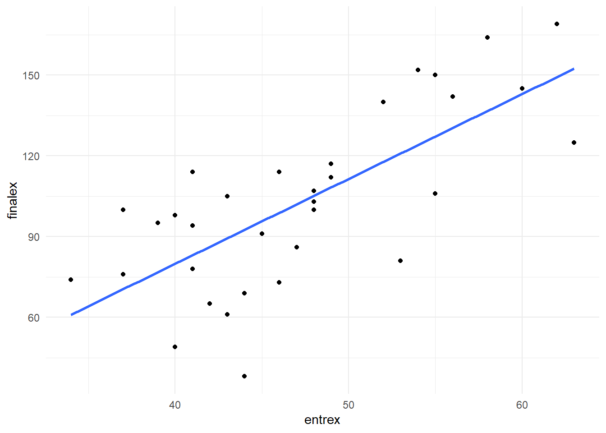
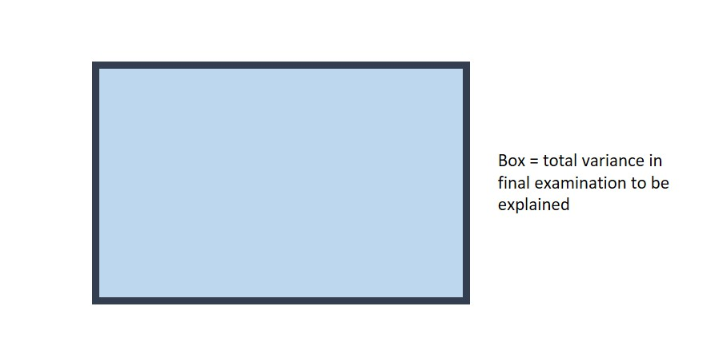
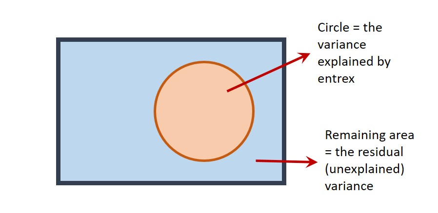
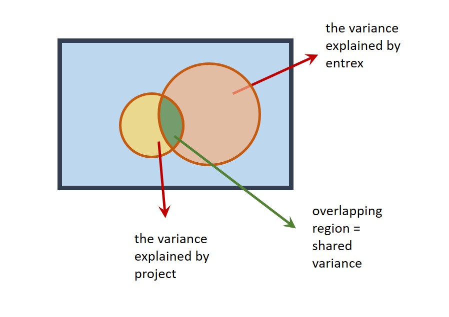
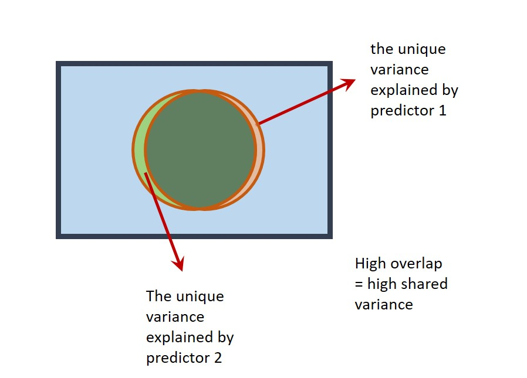

November 2020
This workbook contains details of the four sessions given by Chris Berry:
Week 16 (9/11/20). Building models 1: Multiple continuous predictors
Week 17 (16/11/20). Building models 2: Comparing models
Week 18 (23/11/20). Fitting curves
Week 19 (30/11/20). Q&A Support session
It also contains details of the Data Visualisation and Analysis assessment.
(Materials for sessions by Ben Whalley can be found at https://benwhalley.github.io/datafluency/)
Use the left and right arrows to navigate through this workbook.
Building models 1
November 2020
In brief
Models need to be appropriately complex. That is, we want to make models that represent our theories for the underlying causes of our data. Often this means adding many variables to a regression model. But we won’t always be sure which variables to add. Adding multiple variables also brings challenges. Where predictors are highly correlated (termed multicollinearity) then model results can be confusing.
Multiple regression with several continuous predictors
Overview
So far, you have used regression to predict an outcome variable from a predictor variable. For example, can we predict academic performance from hours of study?
You’ve also used it to determine whether the relation between two variables differs according to a categorical variable. Does the relation between academic performance and hours of study, for example, differ for men and women?
We often want to determine the extent to which an outcome variable is predicted by several continuous predictors.
For example, in addition to hours of study, a person’s IQ or academic interest might also predict their academic performance. We may want to add these predictors to a model because it may serve to improve the prediction of academic performance.
Today, we will:
learn how to conduct a multiple regression with several continuous predictor variables
evaluate the regression model with statistics (\(R^2\), F-statistic, t-values)
use Venn diagrams to help conceptualise the contribution of predictors to a model
Simple vs. multiple regression
Simple regression is a linear model of the relationship between one outcome variable and one predictor variable. For example, can we predict
exam performanceon the basis ofIQscores?Multiple regression is a linear model of the relationship between one outcome variable and more than one predictor variable. For example, can we predict
exam performancebased onIQscores andattendanceat lectures?
Analysing the model
Suppose we want to construct a model to predict final university exam scores. This is the task faced by some admissions tutors! We’ll start off with a simple regression model, then work up to multiple regression.
Load the ExamData dataset from https://bit.ly/37GkvJg. This contains exam scores for students taking a university course. (Make sure tidyverse is loaded first!)
Learning tip
Try typing out the code today if you usually cut and paste it to R!
ExamData <- read_csv('https://bit.ly/37GkvJg')
ExamData %>% head()
> # A tibble: 6 x 7
> finalex entrex age project iq proposal attendance
> <dbl> <dbl> <dbl> <dbl> <dbl> <dbl> <dbl>
> 1 38 44 21.9 50 110 44 0
> 2 49 40 22.6 75 120 70 0
> 3 61 43 21.8 54 119 54 0
> 4 65 42 22.5 60 125 53 0
> 5 69 44 21.9 82 121 73 0
> 6 73 46 21.8 65 140 62 0These are the variables in ExamData:
finalex: final examination marksentrex: entrance examination marksage: age in yearsproject: dissertation project marksiq: IQ scoreproposal: dissertation proposal gradeattendance: 1 = high attendance; 0 = low attendance
First, let’s ask whether finalex is predicted by entrex. Plot these variables:

There looks to be a positive association - students with higher entrance exam scores tend to have higher final exam scores. A good start!
To conduct the simple regression with finalex as the outcome variable, and entrex as the predictor variable, use lm:
Explanation: finalex ~ entrex can be read as “finalex is predicted by entrex”. The model is stored in m1.
View the intercept of the regression line and the coefficient for entrex:
m1
>
> Call:
> lm(formula = finalex ~ entrex, data = ExamData)
>
> Coefficients:
> (Intercept) entrex
> -46.305 3.155We can therefore write the regression equation:
\(Predicted\ final\ exam\ score = -46.305 + 3.155(entrance\ exam)\)
Use summary(m1) to display statistical analysis of the model:
summary(m1)
>
> Call:
> lm(formula = finalex ~ entrex, data = ExamData)
>
> Residuals:
> Min 1Q Median 3Q Max
> -54.494 -21.185 3.733 18.124 30.969
>
> Coefficients:
> Estimate Std. Error t value Pr(>|t|)
> (Intercept) -46.3045 25.4773 -1.817 0.0788 .
> entrex 3.1545 0.5324 5.925 1.52e-06 ***
> ---
> Signif. codes: 0 '***' 0.001 '**' 0.01 '*' 0.05 '.' 0.1 ' ' 1
>
> Residual standard error: 22.7 on 31 degrees of freedom
> Multiple R-squared: 0.531, Adjusted R-squared: 0.5159
> F-statistic: 35.1 on 1 and 31 DF, p-value: 1.52e-06Explanation of the output:
Residuals: provides an indication of the discrepancy between the values of finalex predicted by the model (i.e., the regression equation) and the actual values of finalex. If the model does a good job in predicting finalex, the residuals should be relatively small.
- The difference between
MinandMaxgives us some idea of the range of error in the prediction offinalexscores. The difference in3Qand1Qis the interquartile range. Themedianof the residuals is 3.73.
Coefficients: contains tests of statistical significance for each of the coefficients. The values in the column headed Pr(>|t|) are the p-values associated with the t-values for the coefficients for each predictor. The t-values test a null hypothesis that the coefficients are equal to zero. A p-value less than .05 indicates that a predictor is statistically significant.
The row for the
(intercept)reports a t-test for whether the value of the intercept differs from zero. We’re not usually interested in this test (so don’t report it).The row for
entrextests whether the value of its coefficient (3.15) differs from zero. A coefficient of zero would be expected if the predictor explained no variance in the outcome variable. The coefficient forentrex(3.15) is clearly greater than zero. We can report this by saying thatextrexis a statistically significant predictor offinalex, b = 3.15, t(31) = 5.92, p < .001.
Multiple R-squared: This is \(R^2\) - the proportion of variance in finalex explained by entrex. Here, \(R^2\) = 0.531. So approximately half of the variance in finalex is explained by entrex. It’s usually referred to simply as “R-squared” or \(R^2\).
- \(R^2\) is often reported as a percentage. To get this, simply multiply the value by 100. i.e., 0.531 x 100 = 53.10%.
Adjusted R-squared: is an estimate of \(R^2\), but adjusted for the population. Despite the usefulness of this statistic, most studies still tend to report only the (unadjusted) \(R^2\) value. If reporting the Adjusted R-squared value, be sure to label it clearly as such. Here, Adjusted R-squared = 0.52.
F-statistic: This compares the variance in finalex explained by the model with the variance that it does not explain (i.e., explained variance divided by unexplained variance). Higher values of F indicate that the model explains greater variance in an outcome variable. If the p-value associated with the F-statistic is less than .05, we can say that the model significantly predicts the outcome variable.
Hence, we can say that a model consisting of entrex alone is a significant predictor of finalex, F(1, 31) = 35.10, p < .001. Higher entrex scores tend to be associated with higher finalex scores. If our model did not explain any variance in finalex, we wouldn’t expect this to be statistically significant.
- In simple regression, the null hypothesis being tested on the F-statistic is that the slope of the regression line in the population is equal to zero. This is actually equivalent to the t-test on the
entrexcoefficient. So in simple regression, report the F-statistic for the overall regression or the t-test on the coefficient (not both). This equivalence between F and t does not hold true for multiple regression, as we shall see later.
Now you have a go
Run another simple regression:
set
finalexas the outcome variable andprojectas the predictor variablestore the output in a variable with a different name (
m2)then display the output of
m2usingsummary().
m2 <- lm(finalex ~ project, data= ExamData)
summary(m2)
>
> Call:
> lm(formula = finalex ~ project, data = ExamData)
>
> Residuals:
> Min 1Q Median 3Q Max
> -64.015 -21.686 -0.573 21.758 70.427
>
> Coefficients:
> Estimate Std. Error t value Pr(>|t|)
> (Intercept) 4.6968 40.1677 0.117 0.9077
> project 1.4442 0.5861 2.464 0.0195 *
> ---
> Signif. codes: 0 '***' 0.001 '**' 0.01 '*' 0.05 '.' 0.1 ' ' 1
>
> Residual standard error: 30.32 on 31 degrees of freedom
> Multiple R-squared: 0.1638, Adjusted R-squared: 0.1368
> F-statistic: 6.072 on 1 and 31 DF, p-value: 0.01948
Answer the following: (report statistics to 2 decimal places)
What is the value of the coefficient for
project?What proportion of the variance in
finalexis explained byproject?: \(R^2\) = (or %).Write down the regression equation (on a bit of paper).
- \(Predicted\ final\ exam\ score = 4.70 + 1.44(project)\)
Is
projectalone a statistically significant predictor offinalex, as indicated by the F-statistic?Report the F-ratio in APA style, that is, in the form
F(df1, df2) = F-statistic, p = p-value:
F(1, 31) = 6.07, p = .02
- Individuals with project scores tended to have higher final exam scores.
Conceptualising the variance explained by predictors
Venn diagrams are useful for understanding the variance that predictors explain in the outcome variable. They are especially useful for understanding what’s going on in multiple regression.
Suppose the rectangle below represents all of the variance in finalex to be explained.

The area of the circle below represents the variance in finalex explained by entrex in the first simple regression we did. If this diagram were drawn to scale (it’s not), the area of the circle would be equal to the value of \(R^2\) (i.e., 53.1% of the rectangle).

The part of the rectangle not inside the circle represents the variance in finalex that is not explained by the model (i.e., the unexplained or residual variance).
To improve the model, we can explore whether adding in other predictors to the model explains additional variance, thereby increasing the total \(R^2\) of the model.
You might think that we can simply add in variables (circles, above) to the model as we wish, until all the residual variance has been explained. This seems fine to do until we learn that if we were to add as many predictors to the model as there are rows in our data (33 individuals in our ExamData), then we’d perfectly predict the outcome variable, and have an \(R^2\) of 100%! This would be true even if the predictors consisted of random values. Our model would clearly be meaningless though. We ideally want to explain the outcome variable with relatively few predictors.
Adding predictor variables to the model
An issue that can arise when adding variables to a model is that predictors are usually correlated to some extent. This can make interpretation of multiple regressions tricky. For example, a predictor that is statistically significant in a simple regression may become non-significant in a multiple regression. Let’s see a demonstration of this!
We’ll now add project to the model with entrex. First, check the correlation between predictors:
ExamData %>%
select(entrex,project) %>%
cor()
> entrex project
> entrex 1.0000000 0.2908253
> project 0.2908253 1.0000000The correlation between entrex and project is r =
Our predictor variables are weakly correlated. We should keep this in mind going forward.
Now run a multiple regression to predict finalex from both entrex and project. Again, use lm but use the + symbol to add predictors to the model:
m3 <- lm(finalex ~ entrex + project, data = ExamData)
summary(m3)
>
> Call:
> lm(formula = finalex ~ entrex + project, data = ExamData)
>
> Residuals:
> Min 1Q Median 3Q Max
> -41.880 -16.617 4.636 15.562 35.273
>
> Coefficients:
> Estimate Std. Error t value Pr(>|t|)
> (Intercept) -84.8289 33.6846 -2.518 0.0174 *
> entrex 2.8894 0.5406 5.344 8.81e-06 ***
> project 0.7515 0.4457 1.686 0.1021
> ---
> Signif. codes: 0 '***' 0.001 '**' 0.01 '*' 0.05 '.' 0.1 ' ' 1
>
> Residual standard error: 22.06 on 30 degrees of freedom
> Multiple R-squared: 0.5716, Adjusted R-squared: 0.5431
> F-statistic: 20.02 on 2 and 30 DF, p-value: 3e-06In this model with entrex and projectas predictors:
What is the value of \(R^2\) (as a percentage): %
By how much has \(R^2\) increased in this model, relative to the model with entrex alone (where \(R^2\) was 53.10%)? (as a percentage) (you will need to calculate this) %
Is the overall regression model predicting finalex on the basis of entrex and project statistically significant?
Is
entrexa statistically significant predictor offinalex?We can report this in the following way: the t-test on the coefficient for
entrexis statistically significant, b = 2.89, t(30) = 5.34, p < .001.Is
projecta statistically significant predictor offinalexin this model?What is the value of the coefficient for
project? b =Report the t-statistic in APA style:
Project mark was not a statistically significant predictor of final examination in this model, b = 0.75, t(30) = 1.69, p = .10
Looking across the analyses we’ve performed, we can see that project is a (weak) but statistically significant predictor of finalex in a simple regression. However, when it is included in a model that also includes entrex it is not a significant predictor! What’s going on?
The model containing only
projectexplains 16.38% of the variability infinalex.The model containing only
entrexexplains 53.10% of the variability infinalex.However, a model containing both
projectandentrexonly explains 57.16% of the variability infinalex, not 16.38 + 53.10 = 69.48%, as we might expect.
This is because the predictors are correlated (r = .29) and so the variance they explain in finalex is shared.
We could represent this on a Venn diagram as follows:

The correlation is represented as an overlap in the circles. Their total area (57.16%) is therefore less than the area they’d explain if there were no overlap (69.48%) (i.e., if there was no correlation).
This demonstrates an important point: The t-tests on the coefficients in a multiple regression assess the unique contribution of each predictor in the model. That is, they test the variance a predictor explains in an outcome variable, after the variance explained by the other predictors has been taken into account. This is why project is not statistically significant in the multiple regression model – it only explains a small amount of variance once entrex has been taken into account.
It is possible to think of the F-statistic and t-value in multiple regression in terms of the Venn diagram:
The F-statistic compares the explained variance with the unexplained variance. The explained variance is represented by the outline of the two circles in the Venn diagram above. The unexplained variance is the remaining blue area of the rectangle.
The t-value compares the unique variance a predictor explains with the remaining unexplained variance. For example, for
projectin the Venn diagram above, this would be the area in the orange crescent, relative to the remaining blue area in the rectangle.
Multicollinearity
If the correlation between predictors is very high (greater than r = 0.9), this is known as multicollinearity. On a Venn diagram, the circles representing the predictors would almost completely overlap. Multicollinearity can be a problem in multiple regression. Predictors may explain a large amount of variance in the outcome variable, but their ‘unique’ contribution in a multiple regression may be small. A situation can arise where neither predictor may be statistically significant even though the overall regression is significant!

An example of multicollinearity in the ExamData dataset can be seen with the variables project and proposal.
Obtain the correlation between project and proposal:
The correlation between project and proposal is r = .
To see the effects of multicollinearity, conduct a regression with finalex as the outcome variable and project and proposal as the predictor variables.
multi1 <- lm(finalex ~ project + proposal, data = ExamData)
summary(multi1)
>
> Call:
> lm(formula = finalex ~ project + proposal, data = ExamData)
>
> Residuals:
> Min 1Q Median 3Q Max
> -64.287 -22.590 -0.346 22.395 70.289
>
> Coefficients:
> Estimate Std. Error t value Pr(>|t|)
> (Intercept) 4.8784 40.8601 0.119 0.906
> project 1.2751 1.7072 0.747 0.461
> proposal 0.1826 1.7263 0.106 0.916
>
> Residual standard error: 30.81 on 30 degrees of freedom
> Multiple R-squared: 0.1641, Adjusted R-squared: 0.1084
> F-statistic: 2.945 on 2 and 30 DF, p-value: 0.06797How much variance in
finalexis explained by the model: \(R^2\) = %.Is the overall regression statistically significant?
Is the coefficient for
projectstatistically significant?- Is the coefficient for
proposalstatistically significant?
Now run two simple regressions to determine whether project and proposal explain variance in finalex and are statistically significant predictors when in models on their own.
multi2 <- lm(finalex ~ project, data = ExamData)
summary(multi2)
>
> Call:
> lm(formula = finalex ~ project, data = ExamData)
>
> Residuals:
> Min 1Q Median 3Q Max
> -64.015 -21.686 -0.573 21.758 70.427
>
> Coefficients:
> Estimate Std. Error t value Pr(>|t|)
> (Intercept) 4.6968 40.1677 0.117 0.9077
> project 1.4442 0.5861 2.464 0.0195 *
> ---
> Signif. codes: 0 '***' 0.001 '**' 0.01 '*' 0.05 '.' 0.1 ' ' 1
>
> Residual standard error: 30.32 on 31 degrees of freedom
> Multiple R-squared: 0.1638, Adjusted R-squared: 0.1368
> F-statistic: 6.072 on 1 and 31 DF, p-value: 0.01948
multi3 <- lm(finalex ~ proposal, data = ExamData)
summary(multi3)
>
> Call:
> lm(formula = finalex ~ proposal, data = ExamData)
>
> Residuals:
> Min 1Q Median 3Q Max
> -64.987 -22.987 -1.378 24.059 68.921
>
> Coefficients:
> Estimate Std. Error t value Pr(>|t|)
> (Intercept) 16.628 37.441 0.444 0.6601
> proposal 1.391 0.598 2.326 0.0267 *
> ---
> Signif. codes: 0 '***' 0.001 '**' 0.01 '*' 0.05 '.' 0.1 ' ' 1
>
> Residual standard error: 30.59 on 31 degrees of freedom
> Multiple R-squared: 0.1486, Adjusted R-squared: 0.1211
> F-statistic: 5.409 on 1 and 31 DF, p-value: 0.02675In a simple regression with
finalexas the outcome variable, andprojectas the predictor variable, \(R^2\) = %.Is the overall regression statistically significant?
In a simple regression with
finalexas the outcome variable, andproposalas the predictor variable, \(R^2\) = %.Is the overall regression statistically significant?
Try to explain what’s going on here in your own words. Click below or ask if you get stuck.
Interpretation
Because
proposalandprojectare highly correlated (r = 0.94), this gives rise to the situation where the simple regressions indicate that they explain variance infinalex, but when both are included as predictors in a multiple regression, it appears as if neither are significant predictors offinalex!If this were a real scenario, we’d consider dropping
projectorproposalfrom the model. Because the correlation is so high, having one predictor is as good as having the other (more or less).It seems intuitive that a person’s final project mark would be highly correlated with their proposal mark.
The take-home message here is to check for high correlations between your predictor variables before including them in a multiple regression.
Final exercise
As a final exercise, run a multiple regression to predict finalex from three predictors: entrex, project, and iq.
multi4 <- lm(finalex ~ entrex + project + iq, data = ExamData)
summary(multi4)
>
> Call:
> lm(formula = finalex ~ entrex + project + iq, data = ExamData)
>
> Residuals:
> Min 1Q Median 3Q Max
> -40.444 -16.174 5.509 14.312 33.338
>
> Coefficients:
> Estimate Std. Error t value Pr(>|t|)
> (Intercept) -130.3803 54.7288 -2.382 0.023981 *
> entrex 2.6180 0.5978 4.379 0.000142 ***
> project 0.6874 0.4490 1.531 0.136620
> iq 0.4862 0.4610 1.055 0.300214
> ---
> Signif. codes: 0 '***' 0.001 '**' 0.01 '*' 0.05 '.' 0.1 ' ' 1
>
> Residual standard error: 22.02 on 29 degrees of freedom
> Multiple R-squared: 0.5875, Adjusted R-squared: 0.5448
> F-statistic: 13.77 on 3 and 29 DF, p-value: 9.168e-06Which variables are statistically significant predictors of finalex?
entrexprojectiq
On the basis of all the models conducted so far (with entrex, project, and iq), which model would you choose to best predict finalex?
The model containing entrex alone, as this seems to provide the simplest and most effective model of the finalex.
A general goal of regression is to identify the fewest predictor variables necessary to predict an outcome variable, where each predictor variable predicts a substantial and independent segment of the variability in the outcome variable.
Summary of key points
Predictors can be added to a model in
lmusing the+symbole.g.,
lm(finalex ~ entrex + project + iq)Predictor variables are often correlated to some extent. This can affect the interpretation of individual predictor variables. Venn diagrams help to understand the results.
The F-statistic tells us whether the model as a whole significantly predicts the outcome variable.
The t-values tell us whether individual predictors in the model are statistically significant.
In multiple regression, it’s important to understand that the statistical significance of individual predictors only holds after taking into account the other predictors in the model.
Multicollinearity exists when predictors are very highly correlated (r above 0.9) and should be avoided.
Building models 2
November 2020
In brief
In this session we discuss model selection in the context of ANOVA and the use of Bayes Factors to choose between theoretically interesting models.
Using ANOVA and Bayes Factors to compare models
Overview
In the previous session, we saw that we can construct a linear model to predict an outcome variable (e.g., final exam score from entrance exam score). We also investigated how we can improve a model by adding several continuous predictors to it.
How do we know if one model is better or should be preferred over another model? We touched on a common sense approach in the last session - we ideally want models that explain the variance in an outcome variable but each predictor in the model should make a sizable and relatively independent contribution to the model.
Today we will cover a more formal approach to model comparison using:
ANOVA (Analysis of Variance) and
Bayes Factors
It’s important that you are comfortable with the material from the first Building Models 1 session before proceeding today.
Comparing models using ANOVA
We can use ANOVA to determine whether the addition of variables into a model leads to a statistically significant improvement in the variance it explains overall. We may want to do this, for example, when building on existing theories or models.
We’ll start by comparing a model with one predictor vs. a model with three predictors.
Using the ExamData from the previous session, we’ll run:
a linear model with
finalexas the outcome variable, andentrexas the predictor.a linear model with
finalexas the outcome variable, andentrex,age, andprojectas the predictors.
ExamData <- read_csv('https://bit.ly/37GkvJg')
model1 <- lm(finalex ~ entrex, data = ExamData)
model2 <- lm(finalex ~ entrex + age + project, data = ExamData)
Explanation of the code: first the data is loaded into ExamData. The results of the simple regression are stored in model1. Those of the multiple regression are stored in model2.
Use summary() to display the results of each regression:
Model 1:
summary(model1)
>
> Call:
> lm(formula = finalex ~ entrex, data = ExamData)
>
> Residuals:
> Min 1Q Median 3Q Max
> -54.494 -21.185 3.733 18.124 30.969
>
> Coefficients:
> Estimate Std. Error t value Pr(>|t|)
> (Intercept) -46.3045 25.4773 -1.817 0.0788 .
> entrex 3.1545 0.5324 5.925 1.52e-06 ***
> ---
> Signif. codes: 0 '***' 0.001 '**' 0.01 '*' 0.05 '.' 0.1 ' ' 1
>
> Residual standard error: 22.7 on 31 degrees of freedom
> Multiple R-squared: 0.531, Adjusted R-squared: 0.5159
> F-statistic: 35.1 on 1 and 31 DF, p-value: 1.52e-06
Model 2:
summary(model2)
>
> Call:
> lm(formula = finalex ~ entrex + age + project, data = ExamData)
>
> Residuals:
> Min 1Q Median 3Q Max
> -42.563 -16.519 4.901 16.991 36.424
>
> Coefficients:
> Estimate Std. Error t value Pr(>|t|)
> (Intercept) -117.9159 46.4211 -2.540 0.0167 *
> entrex 3.0889 0.5734 5.387 8.66e-06 ***
> age 1.4231 1.3756 1.035 0.3094
> project 0.6280 0.4609 1.363 0.1835
> ---
> Signif. codes: 0 '***' 0.001 '**' 0.01 '*' 0.05 '.' 0.1 ' ' 1
>
> Residual standard error: 22.03 on 29 degrees of freedom
> Multiple R-squared: 0.5869, Adjusted R-squared: 0.5442
> F-statistic: 13.73 on 3 and 29 DF, p-value: 9.353e-06
(If you are not sure what it means by “e-06” in the output above then see the FAQs here)
Make note of the variance explained by each model (\(R^2\)), i.e., Multiple R-squared: (report as a percentage, to 2 decimal places)
Model 1: \(R^2\) = %
Model 2: \(R^2\) = %
Which model explains a greater proportion of variance in finalex?
- Calculate the difference in \(R^2\) between the models.
model2improves the prediction offinalexby %
To compare the variance explained by each model, use anova():
anova(model1, model2)
> Analysis of Variance Table
>
> Model 1: finalex ~ entrex
> Model 2: finalex ~ entrex + age + project
> Res.Df RSS Df Sum of Sq F Pr(>F)
> 1 31 15981
> 2 29 14078 2 1903 1.9601 0.1591
Explanation of the output:
anova()compares the variance thatmodel1andmodel2explain with an F-statistic.Pr(>F)gives the p-value for this statistic. If the p-value is less than .05, then we can reject the null hypothesis that there is no difference in the variance explained by each model, and we can say that the variance thatmodel2explains infinalexis significantly greater than that ofmodel1.We can report the F-statistic in APA style as F(2, 29) = 1.96, p = .16. We can say that the additional 5.59% variance that
model2explains relative tomodel1does not represent a statistically significant increase in \(R^2\), and somodel2should not be preferred overmodel1.
Comparing models in steps as we’ve done is sometimes called hierarchical regression or sequential regression. This type of regression is usually used for logical or theoretical reasons, when we want to know the contribution of a predictor (or a set of predictors) over and above an existing one.
Now, you try using anova to compare models.
The variable attendance in ExamData scores individuals according to whether their class attendance was low (0) or high (1). A researcher suspects that attendance may explain additional variance in finalex over and above entrex.
As an exercise, compare the following two models using the anova() approach above:
a model with
entrexas a sole predictor offinalex(i.e.,model1), anda model where
finalexis predicted byextrexandattendance(call thismodel3).
Is there sufficient evidence that a model with entrex and attendance explains more variance than a model with entrex alone?
# model1 was created earlier
summary(model1)
>
> Call:
> lm(formula = finalex ~ entrex, data = ExamData)
>
> Residuals:
> Min 1Q Median 3Q Max
> -54.494 -21.185 3.733 18.124 30.969
>
> Coefficients:
> Estimate Std. Error t value Pr(>|t|)
> (Intercept) -46.3045 25.4773 -1.817 0.0788 .
> entrex 3.1545 0.5324 5.925 1.52e-06 ***
> ---
> Signif. codes: 0 '***' 0.001 '**' 0.01 '*' 0.05 '.' 0.1 ' ' 1
>
> Residual standard error: 22.7 on 31 degrees of freedom
> Multiple R-squared: 0.531, Adjusted R-squared: 0.5159
> F-statistic: 35.1 on 1 and 31 DF, p-value: 1.52e-06
# specify model3
model3 <- lm(finalex ~ entrex + attendance, data = ExamData)
# show model3
summary(model3)
>
> Call:
> lm(formula = finalex ~ entrex + attendance, data = ExamData)
>
> Residuals:
> Min 1Q Median 3Q Max
> -42.750 -11.750 1.801 9.689 30.347
>
> Coefficients:
> Estimate Std. Error t value Pr(>|t|)
> (Intercept) -63.3108 20.2768 -3.122 0.00395 **
> entrex 3.2741 0.4173 7.846 9.35e-09 ***
> attendance 28.8202 6.3398 4.546 8.37e-05 ***
> ---
> Signif. codes: 0 '***' 0.001 '**' 0.01 '*' 0.05 '.' 0.1 ' ' 1
>
> Residual standard error: 17.76 on 30 degrees of freedom
> Multiple R-squared: 0.7223, Adjusted R-squared: 0.7038
> F-statistic: 39.02 on 2 and 30 DF, p-value: 4.499e-09
#compare model1 and model3
anova(model1, model3)
> Analysis of Variance Table
>
> Model 1: finalex ~ entrex
> Model 2: finalex ~ entrex + attendance
> Res.Df RSS Df Sum of Sq F Pr(>F)
> 1 31 15980.6
> 2 30 9462.4 1 6518.1 20.665 8.37e-05 ***
> ---
> Signif. codes: 0 '***' 0.001 '**' 0.01 '*' 0.05 '.' 0.1 ' ' 1The variance explained by a model with
entrexalone is \(R^2\) = %The \(R^2\) for the model that also included
attendancewas \(R^2\) = %The increase in \(R^2\) was %
The ANOVA comparing models can be reported as: F(, ) = , p < .001.
The increase in \(R^2\) was .
As indicated by the estimates of the coefficients for
entrexandattendance, both predictfinalex.A higher
entrexscore and greaterattendanceis associated with afinalexscore.
Comparing models using Bayes Factors
An alternative approach to using ANOVA to compare models is to use Bayes Factors.
A Bayes Factor is the probability of obtaining the data under one model compared to another (Rouder & Morey, 2012).
For example, a Bayes Factor equal to 2 would tell us that the data are twice as likely under one model than another. A Bayes Factor equal to 0.5 would tell us that the data are half as likely under one model than another.
Unlike classical tests of statistical significance (with p-values), Bayes Factors also allow us to quantify evidence for the null hypothesis. Very handy!
To compute a Bayes Factor for a specific linear model, we use lmBF in the BayesFactor package (where lm stands for linear model and BF stands for Bayes Factor).
First, we need to load the BayesFactor package:
We can use the lmBF function in the same way we use lm. The function will return a Bayes Factor for the model we specify.
Let’s determine the Bayes Factor for model1
Explanation of the code: The model is specified in exactly the same way as with lm. Due to a limitation of the package, however, we must convert ExamData from a tibble to a data frame using as.data.frame. Otherwise, the command works in the same way. The results are stored in model1.BF.
To look at what’s stored in model1.BF:
model1.BF
> Bayes factor analysis
> --------------
> [1] entrex : 8310.846 ±0.01%
>
> Against denominator:
> Intercept only
> ---
> Bayes factor type: BFlinearModel, JZSExplanation of the output:
The Bayes Factor provided for the model with
entrexis equal to 8310.85.The
Against denominator: Intercept onlymeans that the model withentrexis being compared with a model that contains an intercept only. In an intercept-only model, the coefficient forentrexis equal to zero; that is, the regression line is a flat line (equal to the mean ofentrex).The value of our Bayes Factor indicates that the model with
entrexin is much more likely than a model that contains only an intercept (8310.85 times more likely, to be precise). We can therefore be confident that a model withentrexis preferable to the intercept only model (just as with our classical analysis). Happy days!
Now let’s do the same for model2:
# specify the model
model2.BF <- lmBF(finalex ~ entrex + age + project, data = as.data.frame(ExamData) )
# show the Bayes Factor
model2.BF
> Bayes factor analysis
> --------------
> [1] entrex + age + project : 2427.676 ±0%
>
> Against denominator:
> Intercept only
> ---
> Bayes factor type: BFlinearModel, JZS
Explanation: The Bayes Factor is equal to 2427.68. Again, this indicates that the model with entrex and age is much more likely than a model with only the intercept in (this is not that surprising given the result for model1.BF above).
But, what we want to know is whether model2 (containing entrex and age) is more likely than model1 (containing only entrex). We can determine this by dividing the Bayes Factor for model2 by the Bayes Factor for model1:
model2.BF / model1.BF
> Bayes factor analysis
> --------------
> [1] entrex + age + project : 0.2921093 ±0.01%
>
> Against denominator:
> finalex ~ entrex
> ---
> Bayes factor type: BFlinearModel, JZSExplanation: The Bayes Factor for this comparison is 0.29. This means that model2 is less than a third as likely than model1. So, model2 is much less likely than model1. Not good news for model2!
Interpreting the Bayes Factor
A Bayes Factor equal to 1 tells us that probability of each model is the same.
A Bayes Factor greater than 1 means that
model2is more likely thanmodel1.A Bayes Factor less than 1 means that
model1is more likely thanmodel2.
Thus, our Bayes Factor of 0.29 indicates that model1 is more likely than model2.
Reporting Bayes Factors
Notation
We usually write the Bayes Factor in reports as \(BF_{10}\) where:
the subscript 1 in \(BF_{10}\) denotes the less-constrained model (the alternative hypothesis). This is the model with more predictors (our
model2).the subscript 0 in \(BF_{10}\) denotes the more constrained or simpler model (i.e., the null hypothesis). This is the model with fewer predictors (our
model1).
(You can just write BF10 if you prefer.)
The Size of the Bayes Factor
If the Bayes Factor is greater than 3 (i.e., \(BF_{10}\) > 3), we say that there is substantial evidence for
model2(the less constrained model).If the Bayes Factor is less than 0.33 (i.e., \(BF_{10}\) < 0.33), we usually say that there is substantial evidence for
model1(the more constrained model).We say that intermediate values for the Bayes Factor (between 0.33 and 3) don’t offer strong evidence for either model.
Thus, because our Bayes Factor of 0.29 is less than 1, this indicates greater evidence for model1 than model2. Furthermore, because the Bayes Factor is less than 0.33, we have substantial evidence for model1 over model2.
It’s becoming increasingly common to report the Bayes Factor alongside the results of a classical analysis. Thus, we could report our results as follows: “There was insufficient evidence that the addition of age and project to the model containing entrance exam resulted in an increase in \(R^2\), F(2, 29) = 1.96, p = .16; BF10 = 0.29.”
Now you try using Bayes Factors to compare models
To supplement the comparison of model3 and model1 that you did with anova, now compute the Bayes Factor for model3 vs. model1.
You’ll need the following steps:
Model 1: Obtain the Bayes Factor for a model with
extrexas a sole predictor offinalex(we did this already above; it’s stored inmodel1.BF)Model 2: Obtain the Bayes Factor for a model where
finalexis predicted byextrexandattendanceand store this inmodel3.BF.Compare the Bayes Factors in
model3.BFandmodel1.BF.
# 1. show the BF for model1 vs. intercept only
model1.BF
> Bayes factor analysis
> --------------
> [1] entrex : 8310.846 ±0.01%
>
> Against denominator:
> Intercept only
> ---
> Bayes factor type: BFlinearModel, JZS
# 2. Obtain the BF for model3 vs. intercept only, then show it
model3.BF <- lmBF(finalex ~ entrex + attendance, data = as.data.frame(ExamData) )
model3.BF
> Bayes factor analysis
> --------------
> [1] entrex + attendance : 2351114 ±0%
>
> Against denominator:
> Intercept only
> ---
> Bayes factor type: BFlinearModel, JZS
# 3. Compare the BFs for model3 vs model1
model3.BF / model1.BF
> Bayes factor analysis
> --------------
> [1] entrex + attendance : 282.897 ±0.01%
>
> Against denominator:
> finalex ~ entrex
> ---
> Bayes factor type: BFlinearModel, JZS
Answer the following questions from the output:
How much more likely is a model withentrex than an intercept only model?
- times more likely.
How much more likely is a model with entrex and attendance than an intercept only model?
- times more likely.
How much more likely is a model with entrex and attendance as predictors than a model with entrex alone?
- times more likely.
There is evidence that a model with entrex and attendance should be preferred over a model with entrex alone, given the data.
Exercise
Now you will practise using ANOVA and Bayes Factors to compare models with a new dataset.
Scenario: A researcher would like to construct a model to predict scores in a memory task from several different variables. The data from 234 individuals are stored in the memory_data dataset, which are located at https://bit.ly/37pOTrC.
Use read_csv to load in the data at the link above to the variable memory_data and preview it with head().
memory_data <- read_csv('https://bit.ly/37pOTrC')
memory_data %>% head()
> # A tibble: 6 x 7
> attention sex blueberries iq age sleep memory_score
> <dbl> <dbl> <dbl> <dbl> <dbl> <dbl> <dbl>
> 1 95.8 1 308 99.9 44.9 9.94 128.
> 2 66.7 1 270 137. 29.4 8.04 127.
> 3 102. 1 442 110. 31.9 11.0 118.
> 4 36.9 1 219 110. 27.9 5.28 95.5
> 5 91.7 0 450 119. 36.7 9.30 122.
> 6 146. 1 255 85.6 23.9 7.05 102.About the data:
attention: sustained attention score (higher = better attention)
sex: 0 = female, 1 = male
blueberries: average number of blueberries consumed per year
iq: the individual’s IQ
age: age of person in years
sleep: average hours of sleep per night
memory_score: memory test score
The researcher wants to test whether attention and sleep predict memory_score. She is already aware of a well-established finding in the literature, which is that iq and age predict memory_score.
She therefore wants to use a hierarchical regression approach to determine whether attention and sleep explain additional variance in memory_score over and above iq and age.
1. First, fit a linear model to determine the extent to which memory_score is predicted by iq and age. Store the results in memory1.
# specify the baseline model
memory1 <- lm(memory_score ~ iq + age, data = memory_data)
# see the model results
summary(memory1)
>
> Call:
> lm(formula = memory_score ~ iq + age, data = memory_data)
>
> Residuals:
> Min 1Q Median 3Q Max
> -44.154 -11.754 0.732 11.608 40.790
>
> Coefficients:
> Estimate Std. Error t value Pr(>|t|)
> (Intercept) 71.1669 9.0796 7.838 1.67e-13 ***
> iq 0.1073 0.0699 1.534 0.126
> age 0.8220 0.1461 5.627 5.27e-08 ***
> ---
> Signif. codes: 0 '***' 0.001 '**' 0.01 '*' 0.05 '.' 0.1 ' ' 1
>
> Residual standard error: 16.1 on 231 degrees of freedom
> Multiple R-squared: 0.1303, Adjusted R-squared: 0.1228
> F-statistic: 17.31 on 2 and 231 DF, p-value: 9.875e-08
2. Next, add attention and sleep to the model, storing your results in memory2.
# specify the next model
memory2 <- lm(memory_score ~ iq + age + attention + sleep, data = memory_data)
# show the results
summary(memory2)
>
> Call:
> lm(formula = memory_score ~ iq + age + attention + sleep, data = memory_data)
>
> Residuals:
> Min 1Q Median 3Q Max
> -28.935 -8.555 1.713 8.450 31.384
>
> Coefficients:
> Estimate Std. Error t value Pr(>|t|)
> (Intercept) 9.60112 8.57889 1.119 0.264246
> iq 0.18673 0.05451 3.426 0.000726 ***
> age 0.86579 0.11308 7.656 5.32e-13 ***
> attention 0.22894 0.02757 8.302 8.88e-15 ***
> sleep 3.68609 0.39328 9.373 < 2e-16 ***
> ---
> Signif. codes: 0 '***' 0.001 '**' 0.01 '*' 0.05 '.' 0.1 ' ' 1
>
> Residual standard error: 12.46 on 229 degrees of freedom
> Multiple R-squared: 0.4839, Adjusted R-squared: 0.4749
> F-statistic: 53.68 on 4 and 229 DF, p-value: < 2.2e-16
3. Now, compare the memory1 and memory2 models using anova()
anova(memory1, memory2)
> Analysis of Variance Table
>
> Model 1: memory_score ~ iq + age
> Model 2: memory_score ~ iq + age + attention + sleep
> Res.Df RSS Df Sum of Sq F Pr(>F)
> 1 231 59912
> 2 229 35554 2 24359 78.447 < 2.2e-16 ***
> ---
> Signif. codes: 0 '***' 0.001 '**' 0.01 '*' 0.05 '.' 0.1 ' ' 1
Answer the following questions:
A model with
iqandageas predictors explains % of the variance inmemory_scoresA model with
iq,age,attentionandsleepas predictors explains % of the variance inmemory_scoresCalculate the additional variance explained by the second model: Change in \(R^2\) = %
The ANOVA comparing models can be reported as: F(, ) = , p < .001.
Is there a statistically significant improvement in the prediction of
memory_scoresas a result of addingattentionandsleepto the model?
Now use Bayes Factors to determine how much more likely the memory2 model is than the memory1 model .
Determine the Bayes Factor for
memory1Determine the Bayes Factor for
memory2Compare the Bayes Factors for
memory2andmemory1
# Store the Bayes Factor for the first model in memory1.BF
memory1.BF <- lmBF(memory_score ~ iq + age, data = as.data.frame(memory_data) )
# Store the Bayes Factor for the second model in memory2.BF
memory2.BF <- lmBF(memory_score ~ iq + age + attention + sleep, data = as.data.frame(memory_data) )
# Compute the Bayes Factors for memory2.BF vs memory1.BF
memory2.BF / memory1.BF
> Bayes factor analysis
> --------------
> [1] iq + age + attention + sleep : 4.168455e+23 ±0%
>
> Against denominator:
> memory_score ~ iq + age
> ---
> Bayes factor type: BFlinearModel, JZS
Answer the following questions:
The Bayes Factor comparing
memory2andmemory1to (2 decimal places) is e+ .Does the Bayes Factor support the conclusions from the ANOVA?
Yes! The Bayes Factor is equal to \(4.17 \times 10^{23}\), and this therefore strongly supports the inclusion of attention and sleep in the model already containing iq and age.
Extra exercises, if there’s time
1.
The researcher wishes to predict the memory_score for a new individual with iq = 105, age = 27, attention = 90, sleep = 8. Determine the prediction.
Hint: in a previous session, you have previously used the predict() function to do this.
- The predicted
memory_scoreis
2.
The researcher is interested to know whether annual consumption of blueberries has any bearing on memory_scores, and so wants to add blueberries to the model in memory2.
Determine the Bayes Factor comparing memory2 with a model that additionally contains blueberries.
The Bayes Factor for the model comparison is (to 2 decimal places)
The Bayes Factor indicates that the model with
blueberriesis than the model without it.Should the researcher add
blueberriesto the model?
# add blueberries to memory2; store in memory3.BF
memory3.BF <- lmBF(memory_score ~ iq + age + attention + sleep + blueberries, data = as.data.frame(memory_data) )
# calculate the BF for memory3 vs memory2
memory3.BF / memory2.BF
> Bayes factor analysis
> --------------
> [1] iq + age + attention + sleep + blueberries : 0.1663574 ±0%
>
> Against denominator:
> memory_score ~ iq + age + attention + sleep
> ---
> Bayes factor type: BFlinearModel, JZSSummary of key points
We can compare a model with one that has more predictors by using
anova(model1, model2).We can compare models using Bayes Factors with
lmBFin theBayesFactorpackage.A Bayes Factor is probability of one model relative to another, given the data.
To compare Bayes Factors of models:
First obtain the Bayes Factors for
model1andmodel2.Then use
model2 / model1to get the Bayes Factor, indicating how much more likelymodel2is.
Bayes Factors less than 1 indicate evidence for
model1Bayes Factors greater than 1 indicate evidence for
model2We can report Bayes Factors as \(BF_{10}\) = 2.23 (or BF10 = 2.23)
Next week’s session will build on what was done in this session, so make sure you understand what was covered and ask the instructor to clarify anything you’re unsure of.
Fitting curves
November 2020
In brief
So far all our regression models have assumed that our variables have linear relationships. That isn’t always the case, and sometimes we need to fit curved lines to describe the relationship of predictors and outcomes. As we saw before, fitting curved lines has costs as well as benefits: A curved line is more likely to overfit the data, and may be less good at predicting new data. But for some models curved lines are essential to describe the world as it really is.
Using polynomials to fit curves
Overview
In this session we will:
See how we can add polynomial terms such as \(x^2\), \(x^3\) to a regression model to capture non-linear relationships.
Use ANOVA and Bayes Factors to determine whether these terms improve the model.
You should be comfortable with what we did in the previous Building Models 1 and Building Models 2 sessions before attempting this one.
Polynomials
The regression models we have been fitting assume a linear (i.e., straight line) relationship between variables. However, variables may not always be related in a linear fashion.
Suppose variables x and y showed the following trend:

It is clear that this relationship would not be explained well by a straight line. We’d lose important information about the relationship if we only fit a straight line. A curve would be better.
We can fit a curve to the data by adding polynomial terms to the regression equation.
Polynomial means that a variable is raised to a particular power. For example:
\(x^2\) means x-squared, which is x-multiplied-by-x, or “x to the power of two”
\(x^3\) means x-cubed, which is x-multiplied-by-x-multiplied-by-x, or “x to the power of three”
If a model has a quadratic component it means it has an \(x^2\) term in the equation.
If a model has a cubic component it means it has an \(x^3\) term in the equation.
To see why this approach works, recall that lines can be represented by equations.
Components of a regression line
The equation \(y = 1 + 0.5x\) would be represented as follows:

We can think of this line as being made up of the constant and a linear component.
- The constant in this equation is indicated by the dashed horizontal line.
- The linear component to this equation 0.5x is indicated by the dashed slope line.
- The solid blue line is a combination of these two components.
Quadratic
The equation \(y = x^2\) would be represented as follows:

To get each value of y, we square the value of x.
So, when x = -5, y is 25.
And if x = -4, y = 16, and so on…
\(y = -x^2\), would look as follows:

Curves with quadratic components have one bend.
Cubic
The equation \(y = x^3\) would be represented as follows:

To get each value of y, we cube the value of x.
So, when x = -5, y is -125.
And if x = 10, y = 1000, and so on…
\(y = -x^3\), would look as follows:

Curves with cubic components have two bends.
Linear plus quadratic components
The equation \(y = 50 + 5x - x^2\) has
- a constant equal to 50
- a linear component 5x
- a quadratic component \(-x^2\):

The dashed lines on the plot indicate the intercept, linear component, and quadratic component of the equation. The solid line represents the equation.
Linear + quadratic + cubic components
The equation \(y = 5000 + 750x - 50x^2 - 20x^3\) has
- a constant equal to 5000
- a linear component 750x
- a negative quadratic component \(-50x^2\)
- a negative cubic component \(-20x^3\)

The dashed lines in the plot indicate the different components of the curve indicated by the solid blue line.
When we see any curve, it is possible to think of it as being composed of components like this. In theory, we can keep adding components, but it’s rare to see even higher-order components (e.g., \(x^4\)) being added. Issues regarding overfitting and generalisability can also arise (mentioned in the slides).
Identifying polynomial components
To determine whether a model should have quadratic, cubic, or higher order components, we can use the sequential regression approach covered in the previous session. We take the following steps, and look at the change in \(R^2\) associated with each step.
First fit the linear model
then test for the addition of the quadratic (\(x^2\)) component
then test for the addition of the cubic (\(x^3\)) component
Let’s see this in action!
Learning tip
Try storing all your code in an R Markdown file today if you are not doing so already! You can use code chunks and write text to describe each chunk as was described in the slides.
We’ll use a dataset inspired by a 2016 survey of the National Office for Statistics. They investigated happiness across the life span. Approximately 300,000 individuals of all ages answered questions related to well-being.
Each participant answered the following question regarding their happiness:
"Overall, how happy did you feel yesterday?
Where 0 is ‘not at all happy’ and 10 is ‘completely happy’."
This happy dataset are located at “https://bit.ly/2uIxM5K”.
Let’s load the data into R, and preview the data using head:
# load the data
SurveyData <- read_csv("https://bit.ly/2uIxM5K")
# preview it
SurveyData %>% head()
> # A tibble: 6 x 3
> age happiness anxiety
> <dbl> <dbl> <dbl>
> 1 66.0 7.85 2.33
> 2 35.0 7.56 2.58
> 3 58.6 7.59 3.43
> 4 35.0 7.06 1.67
> 5 60.2 7.96 2.13
> 6 67.5 8.11 1.09
Plot the relationship between age and happiness:

If you had to guess from the plot, which components seem to be present in the relationship between happiness and age?
Linear:
Quadratic:
Cubic:
Try to describe the relationship between happiness and age.
Happiness of individuals appears to decline from 30 years to the late forties. Happiness then increases beyond the late forties, reaching its peak at 70 years, at which age people reported the highest levels of happiness - higher even than levels shown in early thirties.
Linear component
To determine whether there is a linear component, run a simple regression with happiness as the outcome variable and age as the predictor:
polynomial1 <- lm(happiness ~ age, data = SurveyData)
summary(polynomial1)
>
> Call:
> lm(formula = happiness ~ age, data = SurveyData)
>
> Residuals:
> Min 1Q Median 3Q Max
> -0.78019 -0.16858 -0.04762 0.19811 0.84368
>
> Coefficients:
> Estimate Std. Error t value Pr(>|t|)
> (Intercept) 6.484101 0.102340 63.36 <2e-16 ***
> age 0.021076 0.001979 10.65 <2e-16 ***
> ---
> Signif. codes: 0 '***' 0.001 '**' 0.01 '*' 0.05 '.' 0.1 ' ' 1
>
> Residual standard error: 0.2912 on 148 degrees of freedom
> Multiple R-squared: 0.4339, Adjusted R-squared: 0.4301
> F-statistic: 113.5 on 1 and 148 DF, p-value: < 2.2e-16Explanation: The linear model is stored in polynomial1. summary displays the results.
What percentage of the variance in happiness scores is explained by age? %
Is age a statistically significant predictor of happiness
The linear model does okay, but remember it is only fitting a straight line through our data, which appear to show a curved relationship!
Adding a quadratic component
We can add a quadratic component to the regression model using poly(). If we type poly(age, 2) when specifying the model, the ‘2’ in the poly() function tells R that we want to fit a model with both linear and quadratic components of age. This is the model it’ll fit:
\(predicted \: happiness = a + b_1(age) + b_2(age^2)\)
where \(a\) is the intercept, and \(b_1\) and \(b_2\) are the coefficients for the linear and quadratic components, respectively.
polynomial2 <- lm(happiness ~ poly(age,2), data = SurveyData)
summary(polynomial2)
>
> Call:
> lm(formula = happiness ~ poly(age, 2), data = SurveyData)
>
> Residuals:
> Min 1Q Median 3Q Max
> -0.58896 -0.12752 -0.02333 0.13274 0.59724
>
> Coefficients:
> Estimate Std. Error t value Pr(>|t|)
> (Intercept) 7.54433 0.01779 424.06 <2e-16 ***
> poly(age, 2)1 3.10223 0.21789 14.24 <2e-16 ***
> poly(age, 2)2 2.36118 0.21789 10.84 <2e-16 ***
> ---
> Signif. codes: 0 '***' 0.001 '**' 0.01 '*' 0.05 '.' 0.1 ' ' 1
>
> Residual standard error: 0.2179 on 147 degrees of freedom
> Multiple R-squared: 0.6853, Adjusted R-squared: 0.681
> F-statistic: 160.1 on 2 and 147 DF, p-value: < 2.2e-16Explanation of the code: We’ve told R we want to add a quadratic component to the model by using happiness ~ poly(age, 2).
Explanation of the output: You will see in the output separate coefficient estimates for poly(age, 2)1 and poly(age, 2). These are the estimates of the coefficients for the linear and quadratic components of age (i.e., \(b_1\) and \(b_2\) in the equation above).
What percentage of the variance in happiness does a model with a quadratic component of age explain? %
Compare the value of \(R^2\) in polynomial1 and polynomial2.
Does the addition of a quadratic component result in a numerical increase in \(R^2\) in
polynomial2?What is the change in \(R^2\)? % (to 2 decimal places)
\(R^2\) change from polynomial1 to polynomial2 = 68.53 - 43.39 = 25.14%
Therefore, the model with the quadratic component of age accounts for 25.14% more variance in happiness than the model with only a linear component.
We can test whether the increase in R2 in polynomial2 represents a statistically significant increase by comparing polynomial1 and polynomial2 using anova:
anova(polynomial1, polynomial2)
> Analysis of Variance Table
>
> Model 1: happiness ~ age
> Model 2: happiness ~ poly(age, 2)
> Res.Df RSS Df Sum of Sq F Pr(>F)
> 1 148 12.5542
> 2 147 6.9791 1 5.5752 117.43 < 2.2e-16 ***
> ---
> Signif. codes: 0 '***' 0.001 '**' 0.01 '*' 0.05 '.' 0.1 ' ' 1Is the increase in \(R^2\) associated with the addition of the quadratic component statistically significant?
Yes. We can report the improvement in fit as follows:
A model with a quadratic component of age accounted for a statistically significantly greater proportion of variance in happiness than a model with only a linear component, F(1, 147) = 117.43, p < .001.
Adding a cubic component
Now we’ll test for a cubic component.
polynomial3 <- lm(happiness ~ poly(age,3), data = SurveyData)
summary(polynomial3)
>
> Call:
> lm(formula = happiness ~ poly(age, 3), data = SurveyData)
>
> Residuals:
> Min 1Q Median 3Q Max
> -0.60468 -0.14165 -0.01844 0.13839 0.58176
>
> Coefficients:
> Estimate Std. Error t value Pr(>|t|)
> (Intercept) 7.54433 0.01777 424.447 <2e-16 ***
> poly(age, 3)1 3.10223 0.21769 14.251 <2e-16 ***
> poly(age, 3)2 2.36118 0.21769 10.846 <2e-16 ***
> poly(age, 3)3 -0.24530 0.21769 -1.127 0.262
> ---
> Signif. codes: 0 '***' 0.001 '**' 0.01 '*' 0.05 '.' 0.1 ' ' 1
>
> Residual standard error: 0.2177 on 146 degrees of freedom
> Multiple R-squared: 0.688, Adjusted R-squared: 0.6816
> F-statistic: 107.3 on 3 and 146 DF, p-value: < 2.2e-16The ‘3’ in poly(age,3) tells R that we want to specify a model with linear, quadratic and cubic components, of the form:
\(happiness = a + b_1(age) + b_2(age^2) + b_3(age^3)\)
What percentage of the variance in happiness does a model with a cubic component of age explain? %
Compare the value of \(R^2\) in polynomial3 and polynomial2.
Does the addition of a cubic component result in a numerical increase in \(R^2\) in
polynomial3?What is the increase in \(R^2\) as a result of adding in the cubic component? (Compare \(R^2\) between
The increase in \(R^2\) is %polynomial3andpolynomial2).
To determine if the increase in \(R^2\) is statistically significant, we can again use anova:
anova(polynomial2, polynomial3)
> Analysis of Variance Table
>
> Model 1: happiness ~ poly(age, 2)
> Model 2: happiness ~ poly(age, 3)
> Res.Df RSS Df Sum of Sq F Pr(>F)
> 1 147 6.9791
> 2 146 6.9189 1 0.060171 1.2697 0.2617Is the increase in \(R^2\) associated with the addition of a cubic component statistically significant?
The anova comparing polynomial3 and polynomial2 is not statistically significant, F(1, 146) = 1.27, p = .26, indicating that the addition of the cubic component of age into the regression model does not increase the variance in happiness explained.
On the basis of the tests conducted so far, which model should be preferred? One with:
Our analyses suggest that a model with a quadratic component of age (i.e., the model in polynomial2) is sufficient to explain the data.
A note about poly()
poly automatically creates polynomial terms for us. The polynomials it creates are actually a special type, called orthogonal polynomials. This means that the polynomials are not correlated with one another. For example, the correlation between the \(age\) and \(age^2\) components created by poly is zero . Likewise, the correlation betweem \(age^2\) and \(age^3\) components created by poly is also zero.
This is desirable because if the components were not orthogonalised, they’d be highly correlated with each other. That is, the raw scores for \(age\) and \(age \times age\) are likely to be highly correlated. As we covered in the first Building Models 1 session, high correlations between our predictors is undesirable as it can lead to multicolinearity.
Bayesian approach
As we did in the previous session, we can use Bayes Factors to compare the models with different polynomial components.
Preparations
Unfortunately, poly() does not work seamlessly with lmBF, as it did with lm. Instead, we need to create separate variables in SurveyData for the quadratic and cubic components before we work out the Bayes Factors with lmBF.
To add the quadratic component to SurveyData:
Explanation of the code: The code takes SurveyData, then uses mutate to add a new variable age2 to the dataset. age2 contains the quadratic component of age, created by poly(age,2)[,"2"].
We can see the new variable age2 when we look at SurveyData again:
SurveyData %>% head()
> # A tibble: 6 x 4
> age happiness anxiety age2
> <dbl> <dbl> <dbl> <dbl>
> 1 66.0 7.85 2.33 0.0761
> 2 35.0 7.56 2.58 0.0483
> 3 58.6 7.59 3.43 -0.0440
> 4 35.0 7.06 1.67 0.0481
> 5 60.2 7.96 2.13 -0.0246
> 6 67.5 8.11 1.09 0.110
Now create the variable for the cubic component:
Explanation of the code: As before, the code takes SurveyData, then uses mutate to add a new variable age3 to the dataset. age3 contains the quadratic component of age, created by poly(age,3)[,"3"].
Again, we can see the new variable age3 when we look at SurveyData:
SurveyData %>% head()
> # A tibble: 6 x 5
> age happiness anxiety age2 age3
> <dbl> <dbl> <dbl> <dbl> <dbl>
> 1 66.0 7.85 2.33 0.0761 0.00888
> 2 35.0 7.56 2.58 0.0483 0.0353
> 3 58.6 7.59 3.43 -0.0440 -0.0988
> 4 35.0 7.06 1.67 0.0481 0.0356
> 5 60.2 7.96 2.13 -0.0246 -0.0974
> 6 67.5 8.11 1.09 0.110 0.0707
Derive the Bayes Factors
First, make sure the BayesFactor package is loaded (library(BayesFactor)). We can use lmBF to get the Bayes Factor for each model, as we did in the previous session.
To derive the Bayes Factor for polynomial1:
To derive the Bayes Factor for polynomial2:
# store the Bayes Factor for polynomial2
polynomial2BF <- lmBF(happiness ~ age + age2, data = as.data.frame(SurveyData) )Explanation: With lmBF we need to specify the polynomial equation with both linear and quadratic components separately, hence happiness ~ age + age2.
The Bayes Factor comparing polynomial2 and polynomial1 is then:
polynomial2BF / polynomial1BF
> Bayes factor analysis
> --------------
> [1] age + age2 : 2.618277e+17 ±0.01%
>
> Against denominator:
> happiness ~ age
> ---
> Bayes factor type: BFlinearModel, JZSHow many more times likely is a model with a quadratic component of age than one with only a linear component?
Does this constitute strong evidence for the addition of a quadratic component?
The Bayes Factor tells us that a model with a quadratic component of age is 2.62e+17 or \(2.62 \times 10^{17}\) times more likely than one that simply contains a linear component. This is very strong evidence for the inclusion of a quadratic component of age in the model.
Next, determine the Bayes Factor for polynomial3:
Explanation: Again, we need to specify the polynomial equation with linear, quadratic, and cubic components separately, hence happiness ~ age + age2 + age3.
Compare polynomial3BF and polynomial2BF:
polynomial3BF / polynomial2BF
> Bayes factor analysis
> --------------
> [1] age + age2 + age3 : 0.1631281 ±0%
>
> Against denominator:
> happiness ~ age + age2
> ---
> Bayes factor type: BFlinearModel, JZSHow many more times likely is a model with a cubic component than one with only linear and quadratic components?
Does this constitute strong evidence for the inclusion of a cubic component in the model?
The Bayes Factor tells us that a model with a cubic component of age is only 0.16 times more likely than one that contains both linear and quadratic components. Because the Bayes Factor is less than 0.33, this constitutes strong evidence for the simpler model with only linear and quadratic components.
On the basis of the model comparison with Bayes Factors, which model should be preferred? One with:
A comparison of Bayes Factors agrees with the comparison of the models with anova. There’s strong evidence that the relationship between age and happiness contains both linear and quadratic components of age. There was no evidence for a cubic component.
Exercise
Now you try incorporating polynomials to a regression, and do so by investigating the relationship between age and anxiety in SurveyData.
The column anxiety in SurveyData contains responses to the question:
“Overall, how anxious did you feel yesterday? Where 0 is ‘not at all anxious’ and 10 is ‘completely anxious’.”
- Create a scatterplot of
agevs.anxiety. Does there appear to be a linear or non-linear relationship?

What kind of relationship between age and anxiety do you think is present?
A slight bow is evident in the plot such that age and anxiety seem to follow an inverted U-shaped relationship.
Reported anxiety levels increase from 30 years to middle age (approx. 50 years) and then declines from 50 to 70 years. This mirrors the relationship with age and happiness. anxiety is greatest when happiness seems lowest.
Answer the following questions:
Linear component
- What percentage of the variance in
anxietyis explained by a model withageas predictor? %
Quadratic component
What percentage of the variance in
anxietyis explained by a model containing both linear and quadratic components ofageas predictors? %What is the increase in \(R^2\) if a quadratic component of
ageis added to the model? %Does this increase represent a statistically significant increase?
What is the F-statistic comparing the model with a linear component vs. one with linear and quadratic components? F(1, 147) = , p = .009
Cubic component
What percentage of the variance in
anxietyis explained by a model containing both linear, quadratic and cubic components ofageas predictors? %What is the increase in \(R^2\) if a cubic component of
ageis added to the model? %Does this increase represent a statistically significant increase?
What is the F-statistic and p-value for the test of the model with a linear + quadratic component vs. linear + quadratic + cubic components? F(1, 146) = , p =
Decision - On the basis of the model comparison with ANOVA, which model should be preferred?
# fit a linear model, show results
anx1 <- lm(anxiety ~ age, data = SurveyData)
summary(anx1)
# fit a quadratic component, show results
anx2 <- lm(anxiety ~ poly(age,2), data=SurveyData)
summary(anx2)
# compare linear and linear+quadratic models
anova(anx1, anx2)
# fit a cubic component
anx3 <- lm(anxiety ~ poly(age,3), data=SurveyData)
summary(anx3)
# compare (linear + quadratic) and (linear + quadratic + cubic) models
anova(anx2, anx3)
Now use Bayes Factors:
(Note: you do not need to re-add the quadratic and cubic components of age to SurveyData, as we did this before. These should still be in SurveyData as age2 and age3.)
The Bayes Factor comparing a model with linear and quadratic components vs. one with a linear component only is
This indicates that there is more evidence for which model?
The Bayes Factor comparing a model with linear, quadratic and cubic components vs. one with linear and quadratic components only is
This indicates that there is more evidence for which model?
Do the comparisons of models with Bayes Factors agree with the conclusions made with anova?
library(BayesFactor)
# BF for model anx1
anx1BF <- lmBF(anxiety ~ age, data = as.data.frame(SurveyData) )
# BF for model anx2
anx2BF <- lmBF(anxiety ~ age + age2, data = as.data.frame(SurveyData) )
# BF for model anx3
anx3BF <- lmBF(anxiety~ age + age2 + age3, data = as.data.frame(SurveyData) )
# compare BFs for anx2 and anx1
anx2BF / anx1BF
> Bayes factor analysis
> --------------
> [1] age + age2 : 5.476443 ±0%
>
> Against denominator:
> anxiety ~ age
> ---
> Bayes factor type: BFlinearModel, JZS
# compare BFs for anx3 and anx2
anx3BF / anx2BF
> Bayes factor analysis
> --------------
> [1] age + age2 + age3 : 0.7556007 ±0%
>
> Against denominator:
> anxiety ~ age + age2
> ---
> Bayes factor type: BFlinearModel, JZSSummary of key points
- Polynomial terms (e.g., \(x^2\), \(x^3\)) can be added to regression models to fit curves in our data.
poly(predictor name, X)can be used withlmto specify models with polynomial terms of the Xth order.- The improvement in fit (\(R^2\)) as a result of adding in a polynomial term can be tested using
anova(polynomial1, polynomial2).
- The improvement in fit (\(R^2\)) as a result of adding in a polynomial term can be tested using
Bayes Factors can also be used to compare models with polynomial terms using
lmBF.- You must store the polynomial components in the dataset first before using
lmBF. Usepoly(predictor name, X)[,"X"], where X is the order of the polynomial you will test (e.g.,poly(age, 3)[,"3"]).
- You must store the polynomial components in the dataset first before using
A note of caution: Although curves of any complexity can be fit, it may not always be meaningful or parsimonious to do so.
- Complex models may overfit the data and may not necessarily generalise to new datasets well.
- It is also important not to extrapolate beyond the range of data used to generate the model when making predictions from the model, as the same relationship may not be present.
Assessment
Chris Berry is the lead for the Data Analysis and Visualisation task, worth 50% of the module grade.
Data Analysis and Visualisation Task
This assignment is due to be submitted to the DLE by the deadline of 12 noon on 21 January 2021.
In overview, you are required to analyse a set of data with RStudio using techniques from the first half of the course, and submit a short report of your findings, in the style similar to that which you may expect to see in the results section of an academic journal. Further details are below.
Submitting your coursework
You should submit exactly 3 files:
- An Rmd (R markdown) file
- An html document, produced by knitting your rmd file.
- As a separate document, upload a copy of the standard coursework coversheet (and complete the feedback section).
Within the Rmd file you should:
- Clearly set out the code that you have used for your analysis
- Where necessary, include comments explaining what specific lines of code do.
- Suppress code that you do not want to be visible in your report.
Your Rmd file should “Just Work” when the marker opens and runs it, and produce the same output as the knitted html file you submitted (i.e. there won’t be any errors or missing datafiles).
If you work on your own computer at home, you should check your Rmd file ‘knits’ correctly on the online Rstudio server.
Background and Dataset
Stories of tremendous personal drive, integrity, and achievement are common in the sporting world. However, not all individuals are motivated to compete in ways that might be deemed fair, and it is not uncommon to hear stories of cheating and gamesmanship (the use of dubious methods to win a competition).
The dataset held at https://bit.ly/335N974 contain responses to a survey, which was conducted to measure the values and attitudes of individuals who play sport. Demographic information was also collected from the respondents.
The variables in the dataset:
age: age in years
gender: female (0) or male (1)
sportype: whether the main sport is an individual (0) or team (1) sport
perabil: perceived ability. An individual’s self-perceived ability in their chosen sport. Higher scores indicate greater perceived ability.
cheating: attitude to cheating. Higher scores indicate a greater willingness to cheat to achieve success.
gamesman: attitude to gamesmanship. Higher scores indicate a greater willingness to use various ploys and tactics to gain a psychological advantage over competitors.
commit: commitment to sport participation. Higher scores indicate a greater commitment in terms of practising, effort, attempts to improve and persevere after making mistakes.
conven: respect for social conventions. Higher scores indicate a greater willingness to display sportsmanship (e.g., shaking hands with opponents, congratulating competitors).
task: perception of success and ability in sport, where success is measured relative to how well the task can actually be performed, and also relative to how well the task can be performed by oneself. Higher scores indicate greater perception of task-oriented success.
ego: perception of success and ability in sport, where success is measured in terms of how well one performs relative to others. Higher scores indicate greater perception of ego-oriented success.
Aims of the Assignment
Your principal objective is to visualise and analyse the dataset using techiques from the first half of the module (i.e., to session 8 on Fitting Curves). You should examine the variables in the dataset and identify interesting questions that you could ask; use these questions to guide the visualisations and analyses that you carry out.
At a minimum, you are expected to:
Build a multiple regression model to predict one of the variables, and explain the model in your report.
Create at least one table and one figure linked to the analysis; they should be of a standard that you would expect to see in an academic journal.
Present statistics in APA style.
Not exceed 1500 words in the the text of your html.
Tips
Rather than just analysing the data all in one huge go, firstly work out what the questions are that seem interesting, and then apply the appropriate analyses and visualisation techniques to the relevant measures for answering them.
It is often the case that interesting hypotheses or ways of visualising the data emerge after a period of reflection, rather than during the first attempt. Be willing to explore the relationships in the data, and then put them aside for a while, before doing further analyses.
You are not required to use every technique from the first half of the course, or every variable in the dataset, in order to achieve a good mark.
Select data and methods that will allow you to focus on questions that seem to make psychological or social sense.
You can dig deeply into aspects of the data if they particularly interest you, but be prepared to justify what you have done. There is no one correct answer to this assignment, just as with real data there is not only one way of visualising or analysing it. Analyses are right or wrong in so far as they provide insight into the data and into the problems that are being researched. If you are not sure whether you are making the right choices in your analyses, then provide justification for them.
In the end, keep in mind that the purpose of this assessment is for you to demonstrate that you can use the techniques from this course competently to answer questions concerning a dataset and present the findings coherently in a report.
Notes
The work submitted should be your own work. You may discuss the data with other students but cannot submit shared work. Please note university rules regarding plagiarism apply.
Reasonable amounts of assistance with technical aspects of RStudio may be obtained from the demonstrator for the course, Paul Sharpe, but this does not include recommending what you should choose to do, or helping with specific interpretations of output. As a general guide, if you are asking for something which would put you at an unfair advantage relative to any other student, then the request is probably unreasonable.
Submissions will be graded according to the School categorical mark scheme (i.e., A+ to N), as detailed in the handbook: https://pghandbook.psy.plymouth.ac.uk/assessment.html
Responses to frequently asked questions will be posted at this FAQ link
FAQ Data Analysis and Visualisation Task
How do I add a caption to a summary output table?
pander() can be used to output a summary table with a caption. Use the caption=“XXX” argument. For example:
library(tidyverse)
library(pander)
mtcars %>%
group_by(cyl) %>%
summarise(mean_mpg = mean(mpg)) %>%
pander(caption = "Mean miles per gallon by cyl")| cyl | mean_mpg |
|---|---|
| 4 | 26.66 |
| 6 | 19.74 |
| 8 | 15.1 |